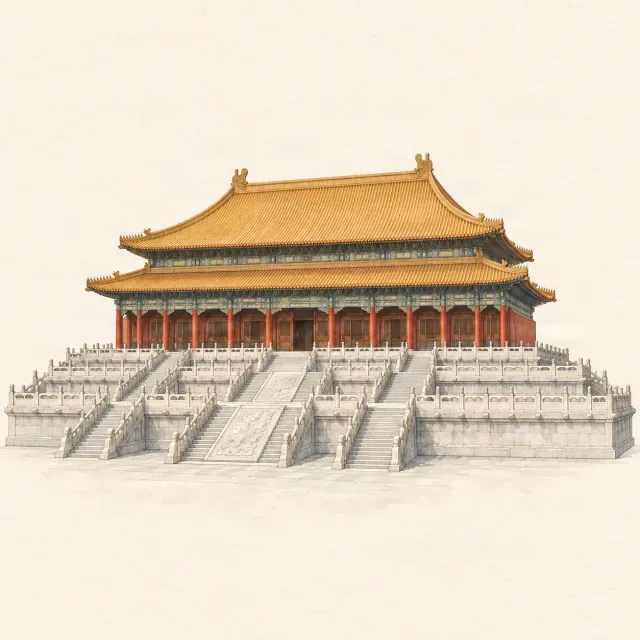

Forbidden City · highlight
Hall of Supreme Harmony: what to look for
Last checked:

What is the Hall of Supreme Harmony?
It is the largest and most important hall in the Forbidden City, the throne hall where emperors were enthroned, married and received the court on great occasions. It stands on a three-tier white marble terrace about 8 metres high, and the present building dates from a rebuilding in 1695 under the Kangxi Emperor, after earlier halls burned. Plan 20–30 minutes here: most of what is worth seeing is outside.
Can you go inside?
No. Visitors look in from the open doorway at the front. The view is worth the short wait at the rail: the gilded throne on its raised platform, six columns wrapped in golden dragons, and above them a coffered ceiling whose centre is a carved dragon holding a pearl. Take a look, then step aside for the next person.
What should I look for on the terrace?
Before climbing the last steps, walk along the terrace in front of the hall. Most visitors pass straight by four objects that explain what the building was for:
- A bronze tortoise and a bronze crane on each side, both symbols of long life. On ceremonial days, incense burned inside them.
- A sundial on the east side: a stone disc tilted to the sky, with a bronze pointer at its centre.
- A standard measure, the jialiang, on the west side: a small bronze vessel on a stone pavilion-shaped stand, a standard for measuring grain.
Time and measure, placed in front of the throne: the message is that the emperor set the standards the empire ran on.
What is on the roof?
Look up at the lower corners of the roof. Each ridge carries a line of small figures led by a man riding a bird. The Hall of Supreme Harmony has ten beasts behind him, more than any other building in China, and the last of them, a winged figure holding a weapon, appears only here. At each end of the top ridge sits a much larger dragon-like ornament, the chiwen, 3.4 metres tall. Binoculars or a phone zoom help. There is more on the figures in the roof guardians of the Forbidden City.
What about the terrace itself?
The three halls of the Outer Court share one marble platform. Count its three tiers on the stairs, and look along the edges for the carved dragon heads below the balustrades: they are drainage spouts. In heavy summer rain, water pours from all of them at once, a sight the museum calls "a thousand dragons spouting water". Near the foot of the terrace, large metal vats once held water for fighting fires in a palace built of wood.
Why is the courtyard so big?
The square in front of the hall is the largest open space in the palace. On ceremonial days, officials lined up on it by rank, marked by small stone tablets set into the paving. The emptiness was the point: a vast, treeless court that made everyone in it look small before the throne.
Is the Gate of Supreme Harmony open?
The gate in front of the courtyard has been closed for conservation since 3 August 2026, with no reopening date announced. Visitors walk around it by the side passages; its bronze lions are still visible outside the works fence.
When is the best time to see it?
In the first hour after the 08:30 opening, before tour groups fill the doorway, or late in the afternoon, when the terrace gets the side light. Cloudy days are good for the roof details; on bright days the yellow tiles glare.
Is there an audio story for the hall?
Penyola has the hall and each of these details as separate points on its hand-drawn map, with illustrated stories and narration, so you can stand at the sundial and listen to the story of the sundial. It works offline.